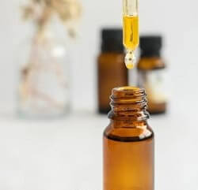

Dermocosmética:
¿Qué es la dermocosmética?
Según la define la RAE, la dermocosmética o dermofarmacia es “la disciplina científica, rama de la farmacia, que se ocupa del estudio y fabricación de productos para aplicación tópica, tanto terapéuticos como cosméticos”.
Es un punto intermedio entre un cosmético tradicional y un medicamento. Todos los productos dermocosméticos se comercializan bajo los mismos estándares de calidad y eficacia que un medicamento.
Por otro lado, este tipo de productos cuenta con una selección de principios activos muy enfocada a evitar reacciones alérgicas con el objetivo de garantizar la salud a quienes los utilizan. Cuentan con activos que pasan por rigurosos estudios clínicos y resultados probados científicamente que garantizan su seguridad y su eficacia.
En este sentido, productos dermocosméticos son más eficaces a la hora de tratar problemas de la piel como son las arrugas, el envejecimiento, manchas, psoriasis, dermatitis, caída del cabello, acné, entre otras.
Una formulación magistral puede ser la mejor opción, cuando un paciente necesita un producto de este tipo que no se encuentra en el mercado, ya sea porque no se fabrica o se ha dejado de fabricar, o porque las concentraciones de los activos no son las que requiere su tratamiento.
Terapias florales:
Propiedades, usos y beneficios

La terapia floral es una terapia alternativa que nos entrega una herramienta adicional en el tratamiento de la mayoría de las enfermedades conocidas. Dentro de la medicina no convencional se la considera de tipo energético o vibracional. Existen diferentes sistemas de esencias orales entre los que se destacan las Flores de Bach, las Flores de Bush y las Flores de California.
Es importante destacar que las Terapias Florales no pretenden sustituir la medicación tradicional, sino complementar aquellas medidas que el profesional médico toma en beneficio de la salud. Son totalmente compatibles con otros tratamientos o terapias, sean de medicina tradicional (medicamentos alopáticos) y/o complementaria (homeopatía, medicamentos naturales, etc.).
Desde 1976, la OMS (Organización Mundial de la Salud) declara a la Terapia Floral inocua y carente de efectos adversos para la salud y la incluye en su informe de Medicinas No Tradicionales.
Flores de Bach
Creadas por el Dr. Edward Bach, quien concibió su uso basándose en la hipótesis de que las enfermedades son consecuencia de trastornos o desequilibrios de la dimensión emocional-mental de la personalidad. Son utilizadas en todo el mundo tanto en forma particular, como por médicos y profesionales de la medicina complementaria, psicoterapeutas, dentistas y veterinarios. El sistema está compuesto por 38 esencias florales, cada una está indicada para un estado emocional y/o mental específico, más fórmulas combinadas para afrontar situaciones especiales, difíciles o traumatizantes. No tienen ningún tipo de contraindicaciones y pueden ingerirse solas, o como complemento de cualquier otro tratamiento.
Están agrupadas en torno a diferentes áreas problemáticas, como ser: Temor, Incertidumbre, Falta de interés, Soledad, Hipersensibilidad a influencias externas, Abatimiento y Excesiva preocupación.
Fórmulas de Bach
Son combinaciones de varias esencias para fines específicos, entre las que se destaca el Remedio de Rescate (Rescue Remedy), un compuesto de cinco esencias florales puntuales para ayudar en caso de emergencias o mucho stress. También hay fórmulas para: Concentración, Aprendizaje, Ampliación de la conciencia, Adelgazante, Energizante, Llagas Bucales, Contracturas musculares, Rupturas sentimentales o Miedos.
Crema de Bach
Liviana, no grasa. Se usa para golpes, traumatismos, aspereza y sequedad de la piel, dermatitis, eczemas, alergias, quemaduras, esguinces y torceduras, paspaduras y contracturas entre otros.
Fórmulas para Niños
Desde un recién nacido hasta un niño en desarrollo pueden usar las Flores de Bach. Hay fórmulas especiales para: Celos, Problemas de sueño, Miedos, Incontinencia nocturna, Pérdidas, Timidez, Agresividad o Cambios de rutina.
Aplicaciones en Mascotas
Los animales tienen emociones y responden a cambios y situaciones estresantes. Hay fórmulas para: Agresividad, Traumas físicos y emocionales, Tristeza, Hiperactividad, Cambios, Época de celo, Viajes, Fatiga o Enfermedad.
Extracto de Ashwagandha:
Propiedades, usos y beneficios
La Ashwagandha es una planta adaptógena, es decir, tiene la propiedad de modular nuestra respuesta a diferentes situaciones de estrés a través de su mecanismo sobre el eje HHA (Hipofisiario-Hipotalámico-Adrenal), el cual es parte esencial de nuestro sistema endócrino.
En 1990, un grupo de científicos le dieron la descripción al término adaptógeno: biorreguladores naturales que aumentan la capacidad de adaptación a factores ambientales y que evitan el daño causado por aquellos factores. De hecho, la ventaja de los adaptógenos es que minimizan la respuesta corporal al estrés, reducen las reacciones negativas durante la fase de alarma y eliminan, o disminuyen, el inicio de la fase de agotamiento que forma parte del llamado síndrome de adaptación general.
La Ashwagandha ha demostrado tener efecto positivo a nivel de fatiga adrenal, dolor e inflamación en artritis, conciliación y calidad del sueño, regulación del sistema neuroendócrino, inhibición de crecimiento tumoral e inducción de apoptosis celular, es decir, muerte y reciclaje celular.
Extracto de regaliz:
Propiedades, usos y beneficios
La raíz del regaliz es uno de los condimentos más antiguos, de sabor anisado y dulce. Se utiliza actualmente para endulzar y saborizar dulces, postres y bebidas.
El consumo de regaliz incentiva la función biliar, mejorando el proceso digestivo. Se genera complementariamente un efecto de protección al hígado. Es muy usado en casos de acidez de estómago, gastritis y para las úlceras, debido a que tiene propiedades antiácidas.
La raíz de regaliz tiene en sus componentes ciertas sustancias que pueden resultar beneficiosas para tratar casos de depresión, desaliento o fatiga crónica.
Desde hace unos años se conoce su propiedad adaptógena, se emplea como tratamiento para el agotamiento adrenal, posee acciones antiinflamatorias y antialérgicas, que lo hacen ideal para tratar el estrés prolongado.
Es un gran estimulante de las funciones depurativas del hígado, ayudando al organismo a liberarse de toxinas. También tiene un ligero efecto diurético y laxante.
Otro de sus usos es como antivirial, sus componentes aumentan la producción antiviral natural del cuerpo, haciéndolo efectivo frente a virus comunes (gripe, resfriados) y para infecciones por herpes zoster y hepatitis.
Vitamina C - uso externo:
Propiedades, usos y beneficios

La vitamina C se convirtió en un súper activo para la dermocosmética. ¿Cuál es la razón? su participación fundamental en el proceso de regeneración de colágeno y su potente efecto antiage.
Es un poderoso antioxidante que previene el daño en el ADN de las células expuestas a los radicales libres y a la radiación solar. También combate el envejecimiento cutáneo, ya que aumenta la síntesis de colágeno, la cual va disminuyendo con el paso de los años como ya sabemos.
Además es un excelente blanqueador no irritante que al mismo tiempo reduce líneas finas de expresión y arrugas, minimiza el enrojecimiento y restaura la flexibilidad y tersura de la piel.
El efecto más notorio mencionado por pacientes que utilizan por primera vez dermocosméticos con vitamina C es la increíble luminosidad que obtuvieron, además del tono unificado, lo que se traduce en una piel saludable y jóven.
Aceite de Argán:
Propiedades, usos y beneficios
El aceite de argán se extrae de las semillas del fruto del árbol de argán que crece únicamente en Marruecos. Por su rareza y exclusividad se lo conoce también como oro líquido.
Es rico en vitamina E, vitamina A y contiene una gran cantidad de antioxidantes. Está compuesto por 80% de ácidos grasos insaturados: ácido palmítico 12%, ácido esteárico 6%, ácido oleico 42,58%, ácido linoleico 36,8% y ácido linolénico 0,5%.
Posee además fenoles y ácido fenólico, caroteno, escualeno y ácidos grasos esenciales.
Estos componentes lo hacen especialmente beneficioso para el cabello y la piel, ya que le otorgan propiedades hidratantes y antiaging. Por esta razón se utiliza cada vez más en dermocosmética.
Vitamina B3 (Niacinamida):
Propiedades, usos y beneficios

La niacinamida también conocida como vitamina B3 o nicotinamida es una vitamina soluble en agua y en alcohol, estable, de bajo peso molecular que penetra en el estrato córneo, el más superficial de nuestra piel. Es precursor de una serie de cofactores que participan en muchas reacciones enzimáticas de la piel.
El uso de este activo, tanto en serum como en crema aporta múltiples beneficios a la piel, entre ellos:
- Reduce el acné por sus propiedades seborreguladoras y antiinflamatorias. Mejora la textura de la piel y el aspecto de los poros. También calma las rojeces y disminuye marcas residuales del acné cuando se pigmentan, lo que se conoce como hiperpigmentación postinflamatoria.
- Mejora la función barrera protectora de la piel al reducir la pérdida de agua transepidérmica, y aumentar la producción de los lípidos de la epidermis o las proteínas. Por lo que también es perfecta para las pieles deshidratadas y secas.
- Reduce la irritación y el enrojecimiento facial característicos de las pieles sensibles.
- Atenúa las arrugas al aumentar la producción de colágeno y elastina.
- Es despigmentante por su acción de inhibir la transferencia de melanosoma desde los melanocitos a los queratocitos.
- Mejora el tono de la piel por su función antiglicación de las proteínas.
- Es antioxidante, protege a las células del estrés oxidativo, importante para pieles expuestas a factores ambientales como la polución, radiación UV y tabaco.